- In Ontario in 2022, there were 559,140 convictions under the Highway Traffic Act (HTA). By far, the most common type of conviction was for speeding (60.4% of all HTA convictions). After speeding, the ten next most common types of convictions were as follows:
- In Ontario in 2021, there were 530 fatal collisions and 24,635 personal injury collisions, for a total of 25,165 fatal and personal injury collisions, involving 46,137 drivers and 46,749 vehicles. (Ontario Ministry of Transportation, 2022)
- The 530 fatal collisions in Ontario in 2021 resulted in the deaths of 592 persons, including 375 drivers (not counting all-terrain vehicle and snowmobile drivers), 95 passengers, and 92 pedestrians. (Ontario Ministry of Transportation, 2022)
- In 2020, there were 147,756 reportable collisions of all types (fatal, personal injury and property damage), involving 259,039 drivers and 268,559 vehicles. (Ontario Ministry of Transportation, 2020)
- In 2022, by common measures of road fatality rates, Ontario had one of the lowest fatality rates of any province. Ontario’s road injury rates were also below the Canadian national rates. See the following two charts. (Transport Canada, 2022) 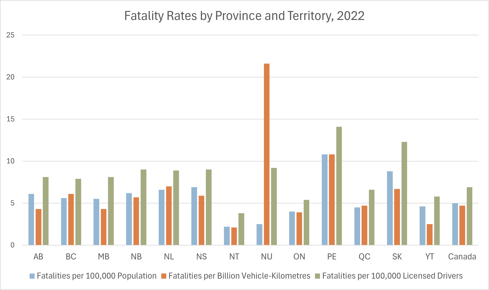 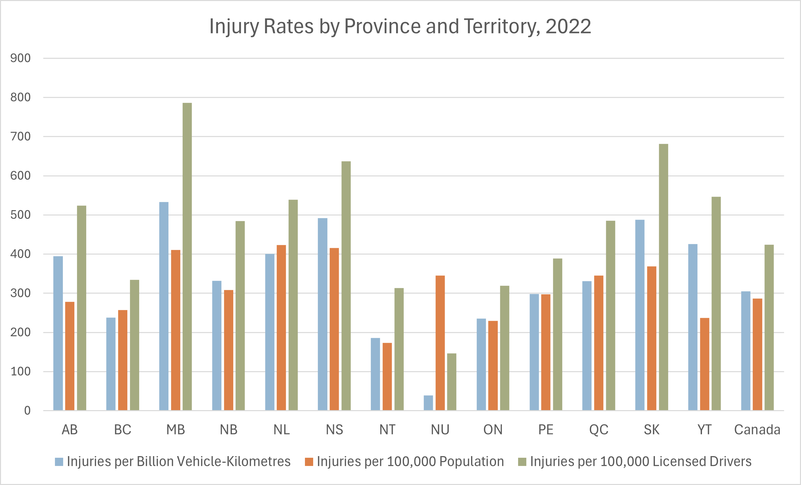
- The following chart shows Ontario’s most frequent categories of road users for major injuries and fatalities in 2020. Car drivers suffered the most major injuries and fatalities. Even though motorcycles represented just 2.2% of motor vehicles on Ontario’s roads, motorcyclists suffered 39.7% as many major injuries as drivers and 33.5% as many fatalities as drivers. (Ontario Ministry of Transportation, 2020) 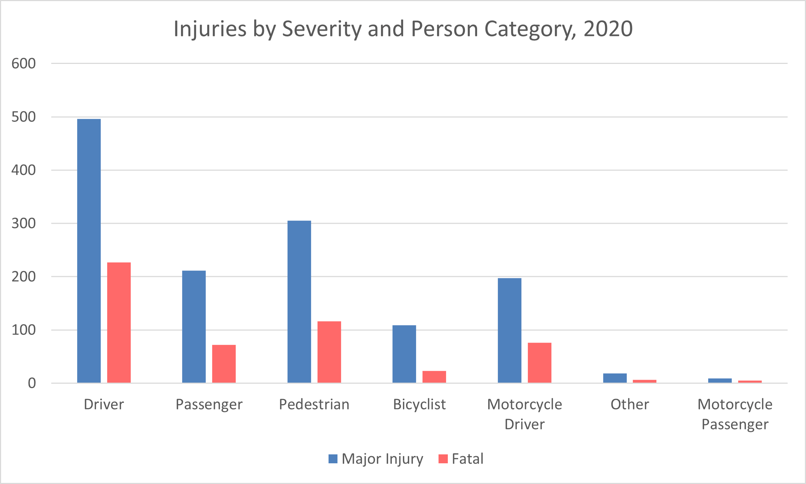
- In 2021, there were 0.38 collision fatalities per 100 million vehicle-kilometres travelled in Ontario. Ontario’s collision fatality rate of 0.54 fatalities per 10,000 licensed drivers was the second lowest in North America. For more than 20 years, Ontario has ranked in the top five for road safety among all North American jurisdictions. (Ontario Ministry of Transportation, 2022)
- In 2020, there were 530 persons killed in collisions on Ontario’s roads. These fatalities included 327 drivers (not counting drivers of all-terrain vehicles or snowmobiles), 72 passengers, and 116 pedestrians. (Ontario Ministry of Transportation, 2020)
- In Ontario, road collision fatalities per 100,000 population have fallen dramatically in recent decades, from 11.5 fatalities per 100,000 population in 1990 to 4.0 fatalities per 100,000 population in 2019 and 3.6 in 2020. See the following chart. (Ontario Ministry of Transportation, 2020) 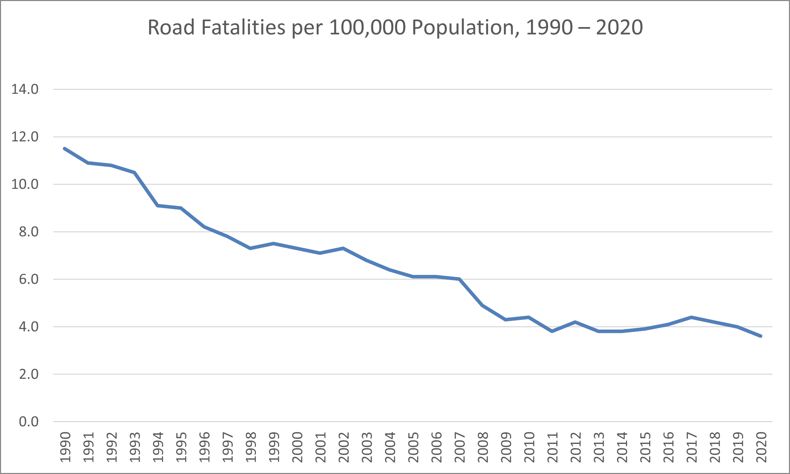
- In Ontario, in 2018, there were 4.2 fatalities and 356.9 injuries per 100,000 population. (Transport Canada, 2020)
- In 2020 in Ontario, there were 3.7 fatalities per billion vehicle-kilometres travelled. (Ontario Ministry of Transportation, 2020)
- In 2020 in Ontario, there were 5.0 fatalities per 100,000 licensed drivers. (Ontario Ministry of Transportation, 2020)
- In 2017, the Ontario Provincial Police responded to 68,794 collisions, 304 of which were fatal. This represented the highest number of traffic fatalities in five years. Seventy-six of those fatal collisions involved commercial vehicles, resulting in 91 deaths. This represented a 10-year-high for fatal collisions involving commercial vehicles. (Ontario Provincial Police, 2018)
- In 2020, 116 pedestrians were killed in traffic accidents. The rate of pedestrian fatalities per 100,000 population has been cut in half over the last 30 years, although there has been a slight uptick since 2009. See the following chart. (Ontario Ministry of Transportation, 2020) 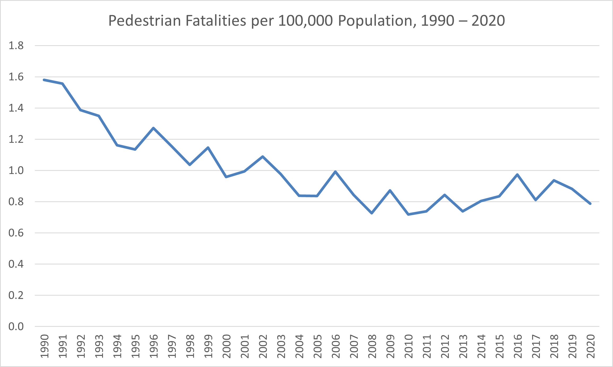
- In 2020, 76 motorcyclists were killed in collisions in Ontario, up from 36 in 2011. The following table lists some factors relevant to fatal motorcycle collisions and the percentages of fatal motorcycle crashes to which the factors may apply. These factors are not mutually exclusive; more than one factor may apply to a given crash. (Ontario Ministry of Transportation, 2020)
- In 2020, passenger vehicles made up about 72.6% of all vehicles in Ontario but accounted for 76.3% of all vehicles involved in collisions. (Ontario Ministry of Transportation, 2020)
- In 2020, motorcycles and mopeds made up just 2.2% of all vehicles in Ontario but accounted for 11.0% of all vehicles involved in fatal collisions. (Ontario Ministry of Transportation, 2020)
- In 2020, 23 bicyclists were killed and 1,499 bicyclists were injured in Ontario. (Ontario Ministry of Transportation, 2020)
- Of the vehicles involved in collisions in Ontario in 2020, 92.8% were insured, 0.8% were not, and the rest were unknown. Of the vehicles involved in fatal collisions, 92.0% were insured, 5.0% were not, and the rest were unknown. (Ontario Ministry of Transportation, 2020)
| Type of Conviction |
Number of Convictions |
Percentage of Total |
|---|---|---|
| Speeding |
337,697 |
60.4% |
| Disobey legal sign |
22,532 |
4.0% |
| Fail to stop at intersection |
19,775 |
3.5% |
| No licence or improper class |
13,132 |
2.3% |
| Fail to produce licence |
12,731 |
2.3% |
| Drive without validated permit |
12,608 |
2.3% |
| Careless driving |
8,578 |
1.5% |
| Unsafe move |
8,449 |
1.5% |
| Numbers on plate not visible |
7,282 |
1.3% |
| Fail to surrender permit |
6,670 |
1.2% |
| No number plate on vehicle |
6,280 |
1.1% |
|
Selected Factors |
Percentage of Total Motorcycle Crashes |
|---|---|
| Unlicensed motorcyclist |
11.4% |
| Under 25 years of age |
11.4% |
| Blood alcohol level > 0.08 |
13.0% |
| Had been drinking |
1.2% |
| Helmet not worn |
3.5% |
| Speed too fast/lost control |
51.0% |
| Other motorcyclist error |
18.2% |
| Single-vehicle collision |
44.0% |
| Day |
77.0% |
| Night |
21.0% |
| Weekend |
42.7% |
- In 2020, the situations with the highest road fatalities included pedestrian fatalities (116 fatalities), speed-related collisions (110 fatalities), and alcohol consumption (98 fatalities). See the following table. (Ontario Ministry of Transportation, 2020)
- Also, see the following chart. Note that these percentages do not sum to 100% because many crashes involved more than one of these situations. (Ontario Ministry of Transportation, 2020) 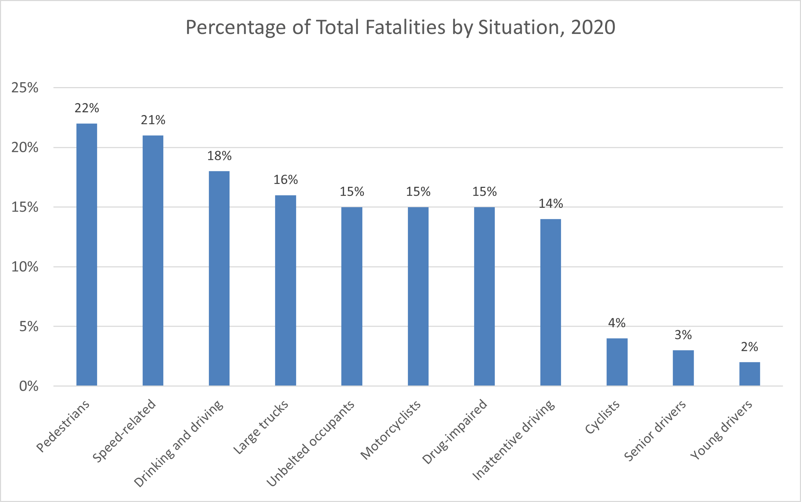
- In 2020, August was the deadliest month for collisions in Ontario: 12.4% of fatal collisions that year occurred in August. However, 10.3% of injury crashes occurred in January, more than in any other month. January also had the most total collisions (including property-damage crashes): 12.3% of all collisions occurred in January. April had the fewest collisions. See the following chart. (Ontario Ministry of Transportation, 2020) 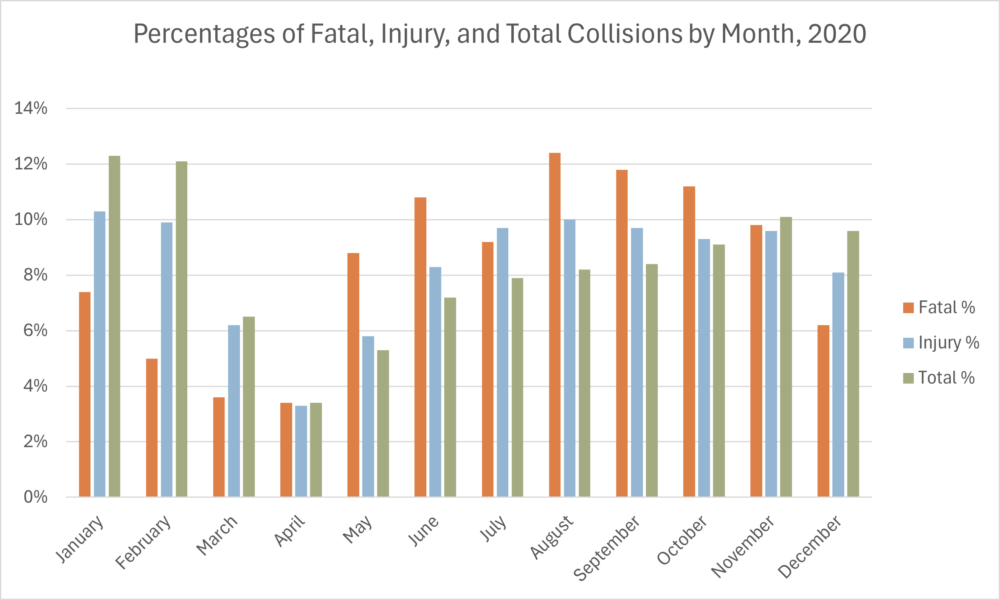
- No unusual driver conditions were identified in 56.4% of fatal collisions and 72.6% of injury collisions in Ontario in 2020. The following chart shows the percentages of fatal and injury conditions where some driver conditions were identified. The most frequent driver condition was inattentiveness, usually caused by distractions such as using a cell phone. The second most common driver condition was a blood alcohol level of over 0.08. (Ontario Ministry of Transportation, 2020) Although the available statistics on fatigue would seem to indicate that fatigue was associated with only a small percentage of serious crashes, the validity of those statistics is open to question, given the difficulty of objectively assessing or testing for fatigued driving (especially if a drowsy driver is killed in the crash).
- A survey of young Ontario drivers in 2013 found that among drivers in grades 10 through 12, 4% of them had driven a vehicle after drinking alcohol, and 9.7% had driven a vehicle after smoking cannabis. (MADD Canada, 2020)
- A 2022 roadside survey in Ontario found that one in five drivers tested positive for drugs, alcohol, or both. (Government of Ontario, May 2024)
- In Ontario in 2023, 49 people were killed in collisions involving alcohol or drug impairment. (Ontario Provincial Police, December 2023)
- The following chart lists the numbers of fatal and injury collisions involving certain drivers’ actions. The most commonly occurring driver actions in fatal collisions were losing control of the vehicle, speeding, and failing to yield the right of way. (Ontario Ministry of Transportation, 2020) 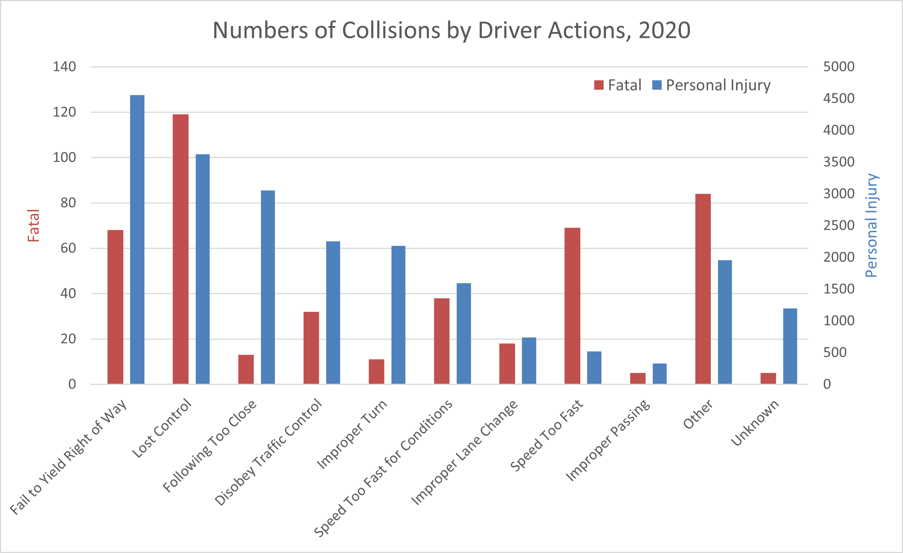
- No unusual pedestrian conditions were identified in 40.5% of pedestrian fatalities and 77.6% of pedestrian injuries in Ontario in 2020. The following chart shows the percentages of pedestrian fatalities and injuries where some pedestrian conditions were identified. As with driver conditions in collisions, inattentiveness was the most frequent pedestrian condition, usually caused by distractions. However, the second most frequent pedestrian condition in pedestrian fatalities (but not injuries) was impairment by drugs. Impairment by alcohol was the second most frequent condition in pedestrian injuries. (Ontario Ministry of Transportation, 2020)
- The following chart lists the numbers of pedestrian fatalities and injuries that involved various actions of the pedestrian. The most commonly occurring pedestrian actions in pedestrian fatalities were crossing an intersection without the legal right of way, crossing an intersection with the legal right of way, and crossing an uncontrolled intersection (no signs or signals). The most common pedestrian actions in pedestrian injuries were crossing an intersection with the legal right of way, crossing an intersection without the legal right of way, and walking on the sidewalk or shoulder. (Ontario Ministry of Transportation, 2020) 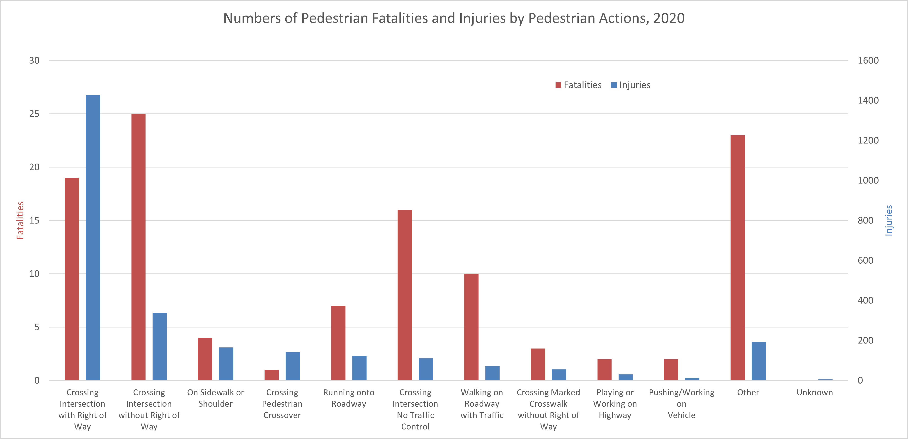
- Just 8.8% of the vehicles involved in collisions in Ontario had a mechanical defect that could have contributed to the collision. Even the most frequent defect, tire puncture or blowout, was involved in only 0.1% of collisions. The second most common defect, wheels or suspension defective, was involved in fewer than 0.1% of collisions. (Ontario Ministry of Transportation, 2020)
- In 2019, there were 126 fatalities in collisions involving large trucks. In 48 (38%) of these collisions, the truck driver was judged not driving properly. Only 3.5% of the examined large trucks involved in fatal crashes had an apparent defect that might have contributed to the crash. 81% of truck crashes occurred in clear weather, and 68% occurred in daylight. Driver impairment by alcohol was not a factor in any of these fatal crashes involving large trucks. (Ontario Ministry of Transportation, 2020)
- In 2017, there were 107 people killed in collisions involving an inattentive (distracted) driver. Inattentive driving was a factor in 17% of all fatalities on Ontario roads in 2017. (Ontario Ministry of Transportation, 2017)
- In 2017, 1,943 collisions involved a driver whose blood alcohol concentration (BAC) exceeded 0.08, the legal limit for intoxication in Ontario. See the following chart for a breakdown of collisions by the age of the drunk driver. More collisions occurred with drunk drivers aged 25 to 34 than with drunk drivers in any other age group. (Ontario Ministry of Transportation, 2020) 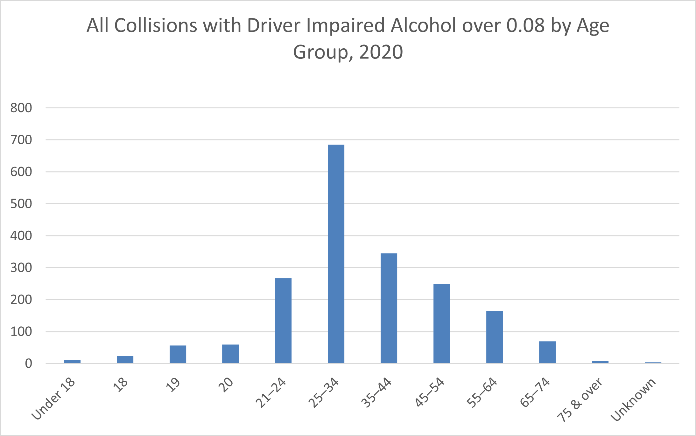
- In a 2022 survey of 3,005 Ontarians’ behaviour during the past year, 3.9% of drivers (6.0% of male drivers, 2.0% of female drivers) admitted to driving after consuming two or more alcoholic drinks in the previous hour. 2.5% of drivers (2.9% of male drivers, 2.1% of female drivers) admitted to driving after using cannabis in the previous hour. (The Centre for Addiction and Mental Health, 2022)
- In 2017, 133 people were killed in collisions involving a drunk driver. However, Ontario’s drinking and driving fatality rate was only 0.13 persons per 10,000 licensed drivers. This is the lowest drinking and driving fatality rate in North America, followed by Washington, DC (0.21). (Ontario Ministry of Transportation, 2017)
- In 2017, 75 people were killed in collisions involving a drugged driver. This represents about 1% of all traffic fatalities. (Ontario Ministry of Transportation, 2017)
- The following table lists the contributing factors involving the most fatalities, along with the number of fatalities and the percentage of the total. (Note that these percentages do not add up exactly to 100% because some fatalities involved more than one contributing factor.) (Ontario Ministry of Transportation, 2017)
- Some roads and traffic intersections in Ontario are much more dangerous than others. Highway 401 between Windsor and London (nicknamed “Carnage Alley”) has long been notorious for its frequent collisions, many of which involved death or injury. However, a CAA poll of drivers in 2024 found that for the first time, drivers most often cited Aberdeen Avenue in Hamilton as Ontario’s worst road for its numerous potholes and traffic congestion. Use extra caution if you drive on these roads.
- In 2020, the most common type of collision in Ontario was the single-vehicle collision (usually involving running off the road or striking a fixed object). The most common type of collision involving more than one vehicle was the rear-end collision. Some types of collisions were more likely to cause death or personal injury than others. Head-on (front-impact) collisions represented only 1.4% of total collisions (which included property-damage collisions) but 17.1% of fatal collisions and 2.9% of injury collisions. Single-vehicle collisions represented 27.6% of total collisions but 53.2% of fatal collisions and 32.2% of injury collisions. On the other hand, striking an unattended vehicle represented 5.2% of total collisions but only 0.8% of fatal collisions and 1.2% of injury collisions. See the following chart. (Ontario Ministry of Transportation, 2020) 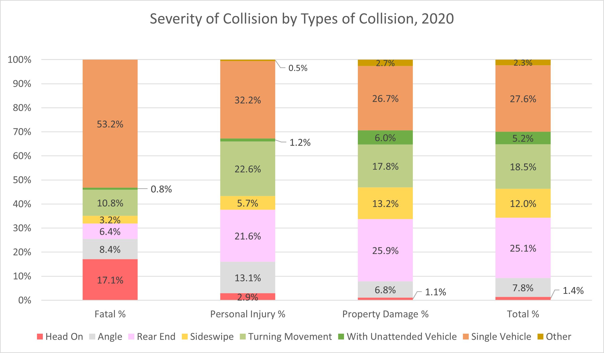
- In 2020, 1,017 collisions in construction zones were investigated by the Ontario Provincial Police (OPP). Seven of these collisions were fatal, and 159 collisions involved injuries. (Ontario Provincial Police, 2020)
- In 2019, there were 22 road fatalities in Ontario among senior drivers aged 80 or older, an increase of 29% from 17 fatalities in 2016. The number of licensed drivers aged 80 or older in Ontario has more than doubled over the past 20 years, from nearly 137,000 in 1999 to over 364,300 in 2020. In 2022, 251 licensed drivers were 100 years old or older. (Ontario Ministry of Transportation, 2020 and 2022)
- In most collisions in Ontario in 2020 involving death or personal injury, the driver was male. See the following chart. (Ontario Ministry of Transportation, 2020) 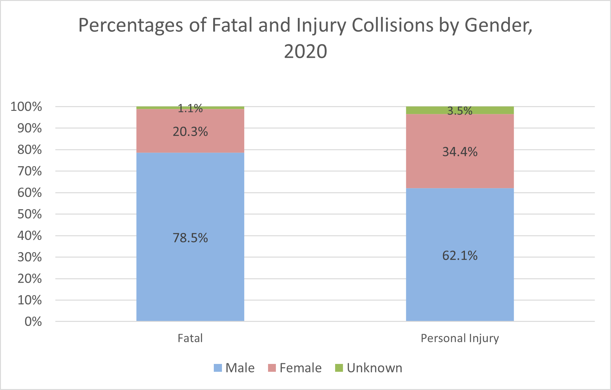
- Ontario has a 96% seatbelt usage rate. Nevertheless, about one in five vehicle occupants killed on Ontario’s roads was unbelted. The following chart compares outcomes for drivers in collisions in 2020: drivers who wore seatbelts, drivers who used other safety equipment (usually airbags) but not seatbelts, and drivers who did not use any safety equipment. Drivers wearing seatbelts had the best outcomes: 71.7% of them escaped with no or minimal injuries; only 0.4% of them were killed. Drivers who relied only on other safety equipment, such as airbags, did not fare quite as well. Drivers who did not use any safety equipment had the worst outcomes: 17.8% of them were killed; only 23.7% of them escaped with no or minimal injuries. (Ontario Ministry of Transportation, 2020) 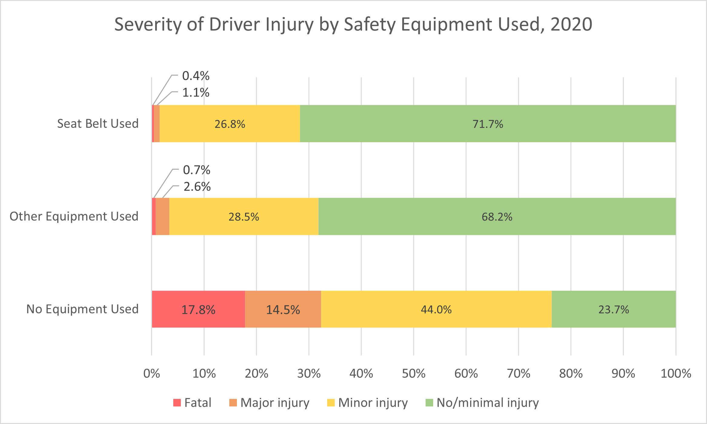
- Research by the Ontario Ministry of Transportation shows that some 26% of all fatal and injury crashes and at least 20% of large truck crashes are estimated to be related to fatigued driving. In 2006, as many as 167,000 Ontario drivers may have been involved in at least one crash due to fatigued or drowsy driving. (Traffic Injury Research Foundation, 2009)
- In 2008, the Traffic Injury Research Foundation (TIRF) surveyed Ontario police officers, including RCMP, provincial, and municipal forces. 95.9% of officers surveyed identified fatigued driving as a serious problem, and 89.2% ranked the problem as being as important as, or comparable to, impaired driving. 92.4% of the officers surveyed also stated that they had stopped a driver whom they suspected was impaired, only to discover that the driver was fatigued instead. However, whereas almost all officers considered fatigued driving a serious or extremely serious problem, only 59.6% of Ontario drivers agreed. (Traffic Injury Research Foundation, 2009)
- In a public opinion poll conducted by TIRF, nearly 60% of Ontario drivers, corresponding to some five million people, admitted that they had driven fatigued at least sometimes. Well over a million Ontario drivers (14.5%) also admitted falling asleep or nodding off while driving at least once in the past year. Collectively, these drivers accounted for about 5.5 million trips in Ontario during which they fell asleep or nodded off. (Traffic Injury Research Foundation, 2009)
- In another poll of Ontario drivers, the most frequently cited reason for driving fatigued was lack of sleep the night before. (Traffic Injury Research Foundation, 2007)
Situations with the Highest Road Fatalities
| Category |
Number of Fatalities |
Percentage of Total Fatalities |
|---|---|---|
| Pedestrians |
116 |
22% |
| Speed-related |
110 |
21% |
| Drinking and driving |
98 |
18% |
| Large trucks |
85 |
16% |
| Unbelted occupants |
82 |
15% |
| Motorcyclists |
81 |
15% |
| Drug-impaired |
77 |
15% |
| Inattentive driving |
74 |
14% |
| Cyclists |
23 |
4% |
| Senior drivers |
17 |
3% |
| Young drivers |
9 |
2% |


|
Number of Fatalities |
Percentage of Total Fatalities |
|
|---|---|---|
| Large Trucks |
141 |
23% |
| Drunk Driving |
133 |
22% |
| Pedestrians |
114 |
18% |
| Speed-Related |
114 |
18% |
| Distracted Driving |
107 |
17% |
| Unbelted Occupants |
87 |
14% |
| Drugged Driving |
74 |
12% |
| Motorcyclists |
69 |
11% |
| Senior Drivers |
25 |
4% |
| Young Drivers |
21 |
3% |
| Cyclists |
14 |
2% |